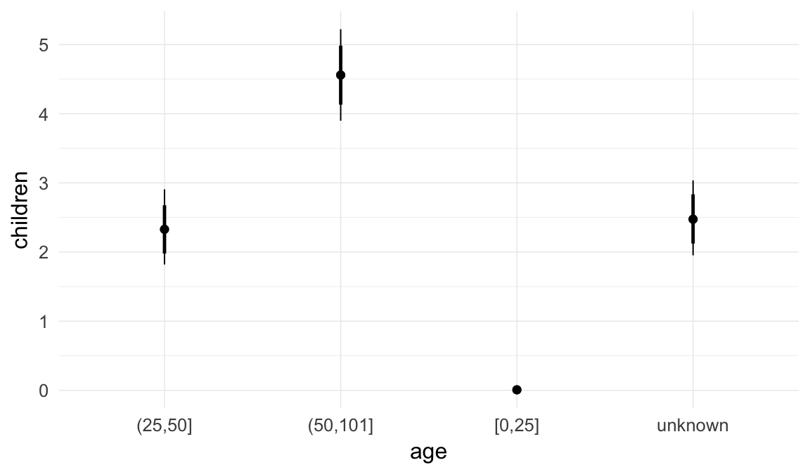
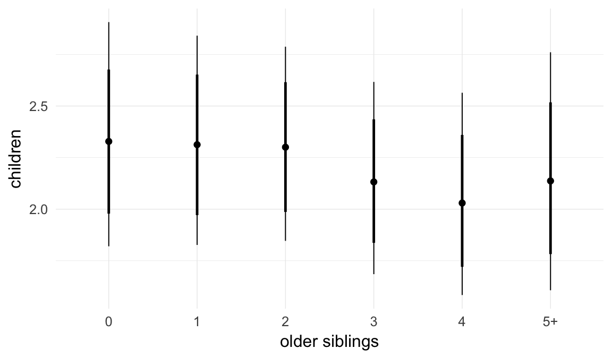
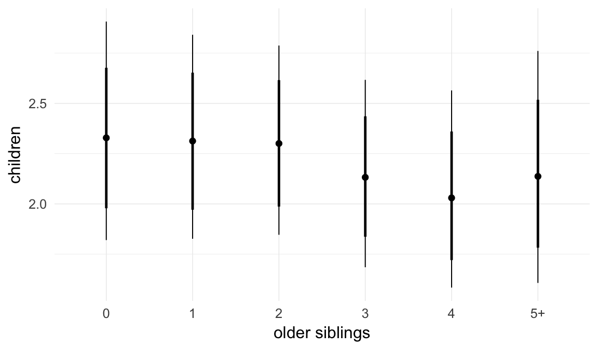
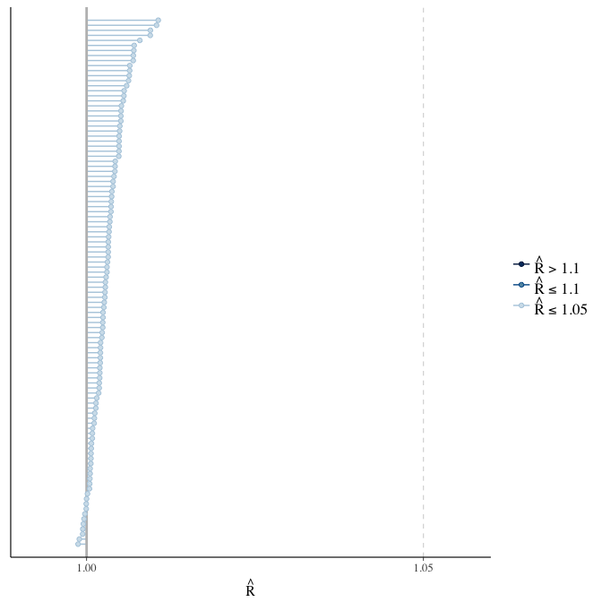
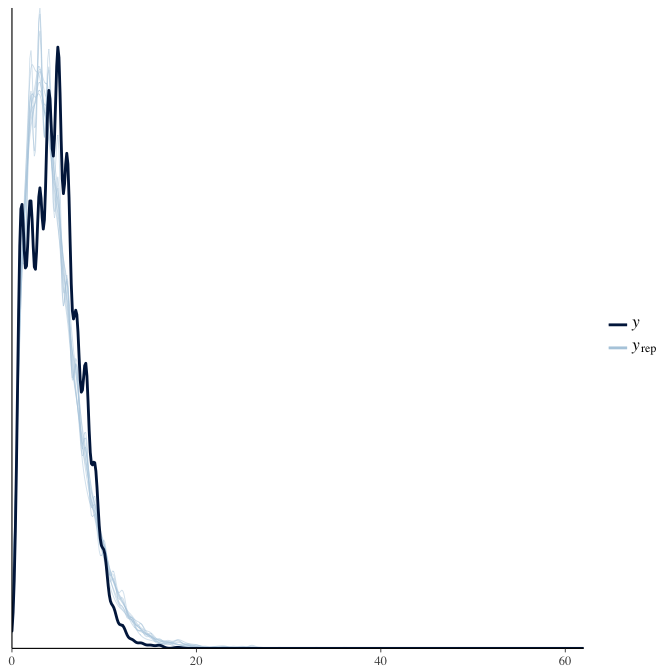

Krummhörn sensitivity analyses
Loading details
source("0__helpers.R")
opts_chunk$set(warning=TRUE, cache=F,cache.lazy=F,tidy=FALSE,autodep=TRUE,dev=c('png','pdf'),fig.width=20,fig.height=12.5,out.width='1440px',out.height='900px')
make_path = function(file) {
get_coefficient_path(file, "krmh")
}
# options for each chunk calling knit_child
opts_chunk$set(warning=FALSE, message = FALSE, echo = FALSE)Analysis description
Data subset
The krmh.1 dataset contains only those participants where paternal age is known, the birthdate is between 1720 and 1850 and the marriage is known (meaning we know when it started and how it ended by spousal death). In known marriages we can assume that missing death dates for the kids mean that they migrated out.
Model description
All of the following models are the same as our main model m3, except for the noted changes to test robustness.
s1: Mediation via age
Here, we tested whether the effect on reproductive success is mediated by age (mortality). We entered an unknown age for people who did not have a death date on their records and most likely outlived the observation period of the church records.
Model summary
Full summary
model_summary = summary(model, use_cache = FALSE, priors = TRUE)
print(model_summary)## Family: hurdle_poisson(log)
## Formula: children ~ paternalage + age + birth_cohort + male + maternalage.factor + paternalage.mean + paternal_loss + maternal_loss + older_siblings + nr.siblings + last_born + (1 | idParents)
## hu ~ paternalage + age + birth_cohort + male + maternalage.factor + paternalage.mean + paternal_loss + maternal_loss + older_siblings + nr.siblings + last_born + (1 | idParents)
## Data: model_data (Number of observations: 9446)
## Samples: 6 chains, each with iter = 1000; warmup = 500; thin = 1;
## total post-warmup samples = 3000
## WAIC: Not computed
##
## Priors:
## b ~ normal(0,5)
## sd ~ student_t(3, 0, 5)
## b_hu ~ normal(0,5)
## sd_hu ~ student_t(3, 0, 10)
##
## Group-Level Effects:
## ~idParents (Number of levels: 2186)
## Estimate Est.Error l-95% CI u-95% CI Eff.Sample Rhat
## sd(Intercept) 0.22 0.01 0.19 0.24 1033 1.00
## sd(hu_Intercept) 0.68 0.05 0.58 0.79 854 1.01
##
## Population-Level Effects:
## Estimate Est.Error l-95% CI u-95% CI Eff.Sample
## Intercept 1.52 0.08 1.36 1.68 1161
## paternalage 0.07 0.05 -0.03 0.18 645
## age50101 0.25 0.03 0.18 0.32 2214
## age025 -1.74 0.32 -2.43 -1.17 1940
## ageunknown 0.06 0.04 0.00 0.13 1862
## birth_cohort1760M1765 0.01 0.06 -0.12 0.13 1232
## birth_cohort1765M1770 -0.14 0.06 -0.25 -0.03 894
## birth_cohort1770M1775 -0.13 0.06 -0.25 -0.02 626
## birth_cohort1775M1780 -0.03 0.05 -0.14 0.08 526
## birth_cohort1780M1785 -0.13 0.06 -0.24 -0.02 690
## birth_cohort1785M1790 -0.10 0.05 -0.20 0.00 723
## birth_cohort1790M1795 -0.08 0.05 -0.19 0.02 695
## birth_cohort1795M1800 -0.11 0.05 -0.20 -0.01 479
## birth_cohort1800M1805 -0.11 0.05 -0.20 -0.02 610
## birth_cohort1805M1810 -0.12 0.05 -0.22 -0.02 480
## birth_cohort1810M1815 -0.07 0.05 -0.16 0.03 466
## birth_cohort1815M1820 -0.12 0.05 -0.21 -0.03 441
## birth_cohort1820M1825 -0.16 0.05 -0.25 -0.07 453
## birth_cohort1825M1830 -0.18 0.05 -0.27 -0.09 433
## birth_cohort1830M1835 -0.15 0.05 -0.24 -0.05 517
## male1 0.14 0.02 0.09 0.18 3000
## maternalage.factor1420 -0.03 0.09 -0.21 0.15 3000
## maternalage.factor3550 -0.01 0.03 -0.06 0.05 3000
## paternalage.mean -0.08 0.05 -0.18 0.03 664
## paternal_loss01 -0.15 0.07 -0.30 -0.01 3000
## paternal_loss15 -0.03 0.05 -0.13 0.07 1791
## paternal_loss510 -0.07 0.04 -0.16 0.00 1440
## paternal_loss1015 0.00 0.04 -0.08 0.08 1345
## paternal_loss1520 -0.08 0.04 -0.16 -0.01 1346
## paternal_loss2025 -0.12 0.04 -0.20 -0.05 1304
## paternal_loss2530 0.00 0.03 -0.07 0.07 1204
## paternal_loss3035 -0.03 0.03 -0.09 0.03 1099
## paternal_loss3540 0.00 0.03 -0.06 0.06 1417
## paternal_loss4045 0.00 0.04 -0.07 0.08 1788
## maternal_loss01 0.11 0.08 -0.05 0.26 3000
## maternal_loss15 -0.02 0.05 -0.12 0.07 3000
## maternal_loss510 0.08 0.04 -0.01 0.16 1475
## maternal_loss1015 0.03 0.04 -0.05 0.11 3000
## maternal_loss1520 0.00 0.04 -0.08 0.08 3000
## maternal_loss2025 0.01 0.04 -0.06 0.09 1541
## maternal_loss2530 -0.01 0.03 -0.08 0.05 1760
## maternal_loss3035 -0.04 0.03 -0.11 0.02 1605
## maternal_loss3540 -0.03 0.03 -0.09 0.03 1273
## maternal_loss4045 -0.02 0.03 -0.08 0.04 3000
## older_siblings1 0.02 0.03 -0.03 0.07 1062
## older_siblings2 -0.05 0.04 -0.12 0.02 749
## older_siblings3 -0.08 0.05 -0.17 0.01 678
## older_siblings4 -0.11 0.06 -0.22 0.01 629
## older_siblings5P -0.10 0.08 -0.26 0.04 613
## nr.siblings 0.01 0.01 0.00 0.03 732
## last_born1 -0.04 0.02 -0.08 0.01 3000
## hu_Intercept -0.61 0.26 -1.13 -0.10 1033
## hu_paternalage 0.08 0.18 -0.27 0.41 733
## hu_age50101 -1.16 0.12 -1.39 -0.93 2663
## hu_age025 5.21 0.22 4.78 5.67 3000
## hu_ageunknown 0.00 0.09 -0.19 0.19 2162
## hu_birth_cohort1760M1765 -0.12 0.21 -0.54 0.27 1275
## hu_birth_cohort1765M1770 -0.35 0.19 -0.71 0.02 896
## hu_birth_cohort1770M1775 0.03 0.18 -0.31 0.37 906
## hu_birth_cohort1775M1780 -0.42 0.19 -0.80 -0.05 886
## hu_birth_cohort1780M1785 -0.52 0.19 -0.90 -0.14 1023
## hu_birth_cohort1785M1790 -0.47 0.18 -0.83 -0.12 773
## hu_birth_cohort1790M1795 -0.36 0.18 -0.71 -0.02 812
## hu_birth_cohort1795M1800 -0.52 0.16 -0.83 -0.21 706
## hu_birth_cohort1800M1805 -0.57 0.16 -0.88 -0.26 663
## hu_birth_cohort1805M1810 -0.49 0.16 -0.82 -0.18 676
## hu_birth_cohort1810M1815 -0.51 0.15 -0.82 -0.21 651
## hu_birth_cohort1815M1820 -0.70 0.15 -1.00 -0.42 595
## hu_birth_cohort1820M1825 -0.65 0.15 -0.95 -0.37 605
## hu_birth_cohort1825M1830 -0.66 0.15 -0.95 -0.37 610
## hu_birth_cohort1830M1835 -0.59 0.15 -0.90 -0.30 625
## hu_male1 0.06 0.06 -0.07 0.17 3000
## hu_maternalage.factor1420 -0.04 0.29 -0.61 0.53 3000
## hu_maternalage.factor3550 0.10 0.09 -0.08 0.28 3000
## hu_paternalage.mean 0.05 0.18 -0.29 0.43 713
## hu_paternal_loss01 0.38 0.22 -0.06 0.82 3000
## hu_paternal_loss15 0.35 0.16 0.04 0.67 1475
## hu_paternal_loss510 0.13 0.14 -0.13 0.40 1177
## hu_paternal_loss1015 0.05 0.14 -0.21 0.31 1229
## hu_paternal_loss1520 -0.14 0.13 -0.40 0.11 1221
## hu_paternal_loss2025 0.06 0.12 -0.18 0.31 1145
## hu_paternal_loss2530 -0.01 0.12 -0.25 0.22 986
## hu_paternal_loss3035 -0.10 0.12 -0.33 0.13 1093
## hu_paternal_loss3540 -0.07 0.11 -0.28 0.15 1227
## hu_paternal_loss4045 0.04 0.12 -0.21 0.28 1533
## hu_maternal_loss01 1.19 0.22 0.77 1.61 3000
## hu_maternal_loss15 0.46 0.15 0.17 0.75 3000
## hu_maternal_loss510 0.44 0.13 0.18 0.70 3000
## hu_maternal_loss1015 0.46 0.14 0.20 0.72 1328
## hu_maternal_loss1520 0.24 0.14 -0.04 0.51 3000
## hu_maternal_loss2025 0.07 0.13 -0.19 0.33 3000
## hu_maternal_loss2530 0.17 0.11 -0.04 0.39 1714
## hu_maternal_loss3035 0.18 0.11 -0.03 0.40 1485
## hu_maternal_loss3540 0.03 0.10 -0.17 0.23 1800
## hu_maternal_loss4045 0.22 0.11 0.02 0.44 3000
## hu_older_siblings1 0.05 0.09 -0.13 0.23 3000
## hu_older_siblings2 -0.07 0.12 -0.31 0.17 886
## hu_older_siblings3 0.02 0.16 -0.27 0.33 624
## hu_older_siblings4 0.07 0.19 -0.29 0.46 740
## hu_older_siblings5P -0.03 0.26 -0.52 0.48 691
## hu_nr.siblings 0.04 0.02 -0.01 0.08 806
## hu_last_born1 0.04 0.08 -0.11 0.20 3000
## Rhat
## Intercept 1.00
## paternalage 1.01
## age50101 1.00
## age025 1.00
## ageunknown 1.00
## birth_cohort1760M1765 1.00
## birth_cohort1765M1770 1.00
## birth_cohort1770M1775 1.00
## birth_cohort1775M1780 1.00
## birth_cohort1780M1785 1.00
## birth_cohort1785M1790 1.01
## birth_cohort1790M1795 1.00
## birth_cohort1795M1800 1.00
## birth_cohort1800M1805 1.01
## birth_cohort1805M1810 1.00
## birth_cohort1810M1815 1.00
## birth_cohort1815M1820 1.01
## birth_cohort1820M1825 1.01
## birth_cohort1825M1830 1.01
## birth_cohort1830M1835 1.00
## male1 1.00
## maternalage.factor1420 1.00
## maternalage.factor3550 1.00
## paternalage.mean 1.01
## paternal_loss01 1.00
## paternal_loss15 1.00
## paternal_loss510 1.00
## paternal_loss1015 1.00
## paternal_loss1520 1.00
## paternal_loss2025 1.00
## paternal_loss2530 1.00
## paternal_loss3035 1.00
## paternal_loss3540 1.00
## paternal_loss4045 1.00
## maternal_loss01 1.00
## maternal_loss15 1.00
## maternal_loss510 1.00
## maternal_loss1015 1.00
## maternal_loss1520 1.00
## maternal_loss2025 1.00
## maternal_loss2530 1.00
## maternal_loss3035 1.00
## maternal_loss3540 1.00
## maternal_loss4045 1.00
## older_siblings1 1.00
## older_siblings2 1.01
## older_siblings3 1.01
## older_siblings4 1.01
## older_siblings5P 1.01
## nr.siblings 1.00
## last_born1 1.00
## hu_Intercept 1.00
## hu_paternalage 1.01
## hu_age50101 1.00
## hu_age025 1.00
## hu_ageunknown 1.00
## hu_birth_cohort1760M1765 1.00
## hu_birth_cohort1765M1770 1.00
## hu_birth_cohort1770M1775 1.00
## hu_birth_cohort1775M1780 1.00
## hu_birth_cohort1780M1785 1.00
## hu_birth_cohort1785M1790 1.00
## hu_birth_cohort1790M1795 1.00
## hu_birth_cohort1795M1800 1.00
## hu_birth_cohort1800M1805 1.00
## hu_birth_cohort1805M1810 1.00
## hu_birth_cohort1810M1815 1.00
## hu_birth_cohort1815M1820 1.00
## hu_birth_cohort1820M1825 1.00
## hu_birth_cohort1825M1830 1.01
## hu_birth_cohort1830M1835 1.00
## hu_male1 1.00
## hu_maternalage.factor1420 1.00
## hu_maternalage.factor3550 1.00
## hu_paternalage.mean 1.01
## hu_paternal_loss01 1.00
## hu_paternal_loss15 1.00
## hu_paternal_loss510 1.01
## hu_paternal_loss1015 1.00
## hu_paternal_loss1520 1.00
## hu_paternal_loss2025 1.00
## hu_paternal_loss2530 1.00
## hu_paternal_loss3035 1.00
## hu_paternal_loss3540 1.00
## hu_paternal_loss4045 1.00
## hu_maternal_loss01 1.00
## hu_maternal_loss15 1.00
## hu_maternal_loss510 1.00
## hu_maternal_loss1015 1.00
## hu_maternal_loss1520 1.00
## hu_maternal_loss2025 1.00
## hu_maternal_loss2530 1.00
## hu_maternal_loss3035 1.00
## hu_maternal_loss3540 1.00
## hu_maternal_loss4045 1.00
## hu_older_siblings1 1.00
## hu_older_siblings2 1.01
## hu_older_siblings3 1.01
## hu_older_siblings4 1.01
## hu_older_siblings5P 1.01
## hu_nr.siblings 1.01
## hu_last_born1 1.00
##
## Samples were drawn using sampling(NUTS). For each parameter, Eff.Sample
## is a crude measure of effective sample size, and Rhat is the potential
## scale reduction factor on split chains (at convergence, Rhat = 1).Table of fixed effects
Estimates are exp(b). When they are referring to the hurdle (hu) component, or a dichotomous outcome, they are odds ratios, when they are referring to a Poisson component, they are hazard ratios. In both cases, they are presented with 95% credibility intervals. To see the effects on the response scale (probability or number of children), consult the marginal effect plots.
fixed_eff = data.frame(model_summary$fixed, check.names = F)
fixed_eff$Est.Error = fixed_eff$Eff.Sample = fixed_eff$Rhat = NULL
fixed_eff$`Odds/hazard ratio` = exp(fixed_eff$Estimate)
fixed_eff$`OR/HR low 95%` = exp(fixed_eff$`l-95% CI`)
fixed_eff$`OR/HR high 95%` = exp(fixed_eff$`u-95% CI`)
fixed_eff = fixed_eff %>% select(`Odds/hazard ratio`, `OR/HR low 95%`, `OR/HR high 95%`)
pander::pander(fixed_eff)| Odds/hazard ratio | OR/HR low 95% | OR/HR high 95% | |
|---|---|---|---|
| Intercept | 4.567 | 3.902 | 5.391 |
| paternalage | 1.076 | 0.9687 | 1.192 |
| age50101 | 1.28 | 1.196 | 1.372 |
| age025 | 0.1757 | 0.08791 | 0.3092 |
| ageunknown | 1.066 | 0.9963 | 1.143 |
| birth_cohort1760M1765 | 1.014 | 0.8913 | 1.143 |
| birth_cohort1765M1770 | 0.8693 | 0.7787 | 0.9735 |
| birth_cohort1770M1775 | 0.8738 | 0.7761 | 0.9774 |
| birth_cohort1775M1780 | 0.9707 | 0.8724 | 1.08 |
| birth_cohort1780M1785 | 0.8787 | 0.7853 | 0.9847 |
| birth_cohort1785M1790 | 0.9052 | 0.8177 | 1.005 |
| birth_cohort1790M1795 | 0.9195 | 0.8281 | 1.016 |
| birth_cohort1795M1800 | 0.8982 | 0.8161 | 0.9885 |
| birth_cohort1800M1805 | 0.8948 | 0.8155 | 0.9825 |
| birth_cohort1805M1810 | 0.89 | 0.806 | 0.9794 |
| birth_cohort1810M1815 | 0.9331 | 0.8508 | 1.026 |
| birth_cohort1815M1820 | 0.8871 | 0.8113 | 0.9686 |
| birth_cohort1820M1825 | 0.8533 | 0.7826 | 0.9338 |
| birth_cohort1825M1830 | 0.8349 | 0.7624 | 0.9161 |
| birth_cohort1830M1835 | 0.8646 | 0.7872 | 0.95 |
| male1 | 1.147 | 1.097 | 1.2 |
| maternalage.factor1420 | 0.9745 | 0.8145 | 1.162 |
| maternalage.factor3550 | 0.9948 | 0.942 | 1.048 |
| paternalage.mean | 0.9249 | 0.8312 | 1.027 |
| paternal_loss01 | 0.8571 | 0.7386 | 0.9915 |
| paternal_loss15 | 0.9688 | 0.876 | 1.068 |
| paternal_loss510 | 0.9293 | 0.8548 | 1.004 |
| paternal_loss1015 | 1.002 | 0.9251 | 1.083 |
| paternal_loss1520 | 0.9217 | 0.8536 | 0.9919 |
| paternal_loss2025 | 0.8872 | 0.8212 | 0.9541 |
| paternal_loss2530 | 0.9989 | 0.9337 | 1.068 |
| paternal_loss3035 | 0.9728 | 0.9121 | 1.036 |
| paternal_loss3540 | 1.002 | 0.9412 | 1.067 |
| paternal_loss4045 | 1.004 | 0.937 | 1.079 |
| maternal_loss01 | 1.115 | 0.9549 | 1.296 |
| maternal_loss15 | 0.9759 | 0.8885 | 1.069 |
| maternal_loss510 | 1.08 | 0.9943 | 1.171 |
| maternal_loss1015 | 1.033 | 0.954 | 1.116 |
| maternal_loss1520 | 1.002 | 0.9269 | 1.082 |
| maternal_loss2025 | 1.014 | 0.9411 | 1.089 |
| maternal_loss2530 | 0.9872 | 0.9229 | 1.056 |
| maternal_loss3035 | 0.9565 | 0.8966 | 1.019 |
| maternal_loss3540 | 0.9705 | 0.917 | 1.026 |
| maternal_loss4045 | 0.9789 | 0.9219 | 1.041 |
| older_siblings1 | 1.02 | 0.9674 | 1.074 |
| older_siblings2 | 0.9526 | 0.8888 | 1.024 |
| older_siblings3 | 0.9223 | 0.8413 | 1.007 |
| older_siblings4 | 0.899 | 0.8019 | 1.013 |
| older_siblings5P | 0.901 | 0.7725 | 1.044 |
| nr.siblings | 1.011 | 0.997 | 1.025 |
| last_born1 | 0.9622 | 0.9191 | 1.007 |
| hu_Intercept | 0.5407 | 0.3238 | 0.906 |
| hu_paternalage | 1.086 | 0.7634 | 1.509 |
| hu_age50101 | 0.3147 | 0.2498 | 0.3965 |
| hu_age025 | 182.3 | 119.6 | 289.2 |
| hu_ageunknown | 1.001 | 0.831 | 1.21 |
| hu_birth_cohort1760M1765 | 0.886 | 0.5845 | 1.305 |
| hu_birth_cohort1765M1770 | 0.7064 | 0.4918 | 1.023 |
| hu_birth_cohort1770M1775 | 1.032 | 0.7337 | 1.451 |
| hu_birth_cohort1775M1780 | 0.6552 | 0.4509 | 0.9471 |
| hu_birth_cohort1780M1785 | 0.5933 | 0.4069 | 0.8693 |
| hu_birth_cohort1785M1790 | 0.6229 | 0.434 | 0.8901 |
| hu_birth_cohort1790M1795 | 0.6947 | 0.4927 | 0.9777 |
| hu_birth_cohort1795M1800 | 0.5969 | 0.4364 | 0.8113 |
| hu_birth_cohort1800M1805 | 0.5634 | 0.413 | 0.7725 |
| hu_birth_cohort1805M1810 | 0.6112 | 0.4389 | 0.839 |
| hu_birth_cohort1810M1815 | 0.6001 | 0.4415 | 0.8112 |
| hu_birth_cohort1815M1820 | 0.4979 | 0.3668 | 0.6595 |
| hu_birth_cohort1820M1825 | 0.5242 | 0.3882 | 0.6936 |
| hu_birth_cohort1825M1830 | 0.5186 | 0.3858 | 0.6917 |
| hu_birth_cohort1830M1835 | 0.553 | 0.4068 | 0.7375 |
| hu_male1 | 1.057 | 0.9354 | 1.189 |
| hu_maternalage.factor1420 | 0.9633 | 0.5444 | 1.702 |
| hu_maternalage.factor3550 | 1.102 | 0.9259 | 1.32 |
| hu_paternalage.mean | 1.056 | 0.7511 | 1.534 |
| hu_paternal_loss01 | 1.469 | 0.9451 | 2.273 |
| hu_paternal_loss15 | 1.425 | 1.037 | 1.963 |
| hu_paternal_loss510 | 1.143 | 0.8744 | 1.495 |
| hu_paternal_loss1015 | 1.056 | 0.8074 | 1.359 |
| hu_paternal_loss1520 | 0.8681 | 0.6716 | 1.12 |
| hu_paternal_loss2025 | 1.067 | 0.8315 | 1.359 |
| hu_paternal_loss2530 | 0.9869 | 0.7795 | 1.247 |
| hu_paternal_loss3035 | 0.9041 | 0.7183 | 1.134 |
| hu_paternal_loss3540 | 0.9367 | 0.7536 | 1.166 |
| hu_paternal_loss4045 | 1.039 | 0.8141 | 1.32 |
| hu_maternal_loss01 | 3.289 | 2.156 | 5.025 |
| hu_maternal_loss15 | 1.576 | 1.181 | 2.125 |
| hu_maternal_loss510 | 1.548 | 1.201 | 2.009 |
| hu_maternal_loss1015 | 1.579 | 1.217 | 2.058 |
| hu_maternal_loss1520 | 1.271 | 0.965 | 1.67 |
| hu_maternal_loss2025 | 1.075 | 0.8301 | 1.397 |
| hu_maternal_loss2530 | 1.189 | 0.9585 | 1.471 |
| hu_maternal_loss3035 | 1.194 | 0.9667 | 1.494 |
| hu_maternal_loss3540 | 1.034 | 0.8432 | 1.261 |
| hu_maternal_loss4045 | 1.247 | 1.021 | 1.547 |
| hu_older_siblings1 | 1.052 | 0.8769 | 1.265 |
| hu_older_siblings2 | 0.935 | 0.7341 | 1.18 |
| hu_older_siblings3 | 1.019 | 0.7647 | 1.389 |
| hu_older_siblings4 | 1.068 | 0.747 | 1.584 |
| hu_older_siblings5P | 0.9715 | 0.5955 | 1.619 |
| hu_nr.siblings | 1.038 | 0.9918 | 1.086 |
| hu_last_born1 | 1.046 | 0.897 | 1.224 |
Paternal age effect
pander::pander(paternal_age_10y_effect(model))| effect | median_estimate | ci_95 | ci_80 |
|---|---|---|---|
| estimate father 25y | 2.28 | [1.86;2.74] | [2;2.58] |
| estimate father 35y | 2.35 | [1.83;2.96] | [1.98;2.72] |
| percentage change | 2.71 | [-15.57;26.01] | [-9.75;17.46] |
| OR/IRR | 1.08 | [0.97;1.19] | [1.01;1.15] |
| OR hurdle | 1.09 | [0.76;1.51] | [0.86;1.35] |
Marginal effect plots
In these marginal effect plots, we set all predictors except the one shown on the X axis to their mean and in the case of factors to their reference level. We then plot the estimated association between the X axis predictor and the outcome on the response scale (e.g. probability of survival/marriage or number of children).
plot.brmsMarginalEffects_shades(
x = marginal_effects(model, re_formula = NA, probs = c(0.025,0.975)),
y = marginal_effects(model, re_formula = NA, probs = c(0.1,0.9)),
ask = FALSE) 

Coefficient plot
Here, we plotted the 95% posterior densities for the unexponentiated model coefficients (b_). The darkly shaded area represents the 50% credibility interval, the dark line represent the posterior mean estimate.
mcmc_areas(as.matrix(model$fit), regex_pars = "b_[^I]", point_est = "mean", prob = 0.50, prob_outer = 0.95) + ggtitle("Posterior densities with means and 50% intervals") + analysis_theme + theme(axis.text = element_text(size = 12), panel.grid = element_blank()) + xlab("Coefficient size")Diagnostics
These plots were made to diagnose misfit and nonconvergence.
Posterior predictive checks
In posterior predictive checks, we test whether we can approximately reproduce the real data distribution from our model.
brms::pp_check(model, re_formula = NA, type = "dens_overlay")brms::pp_check(model, re_formula = NA, type = "hist")Rhat
Did the 6 chains converge?
stanplot(model, pars = "^b_[^I]", type = 'rhat')
Effective sample size over average sample size
stanplot(model, pars = "^b", type = 'neff_hist')Trace plots
Trace plots are only shown in the case of nonconvergence.
if(any( summary(model)$fixed[,"Rhat"] > 1.1)) { # only do traceplots if not converged
plot(model, N = 3, ask = FALSE)
}File/cluster script name
This model was stored in the file: coefs/krmh/s1_control_age.rds.
Click the following link to see the script used to generate this model:
opts_chunk$set(echo = FALSE)
clusterscript = str_replace(basename(model_filename), "\\.rds",".html")
cat("[Cluster script](" , clusterscript, ")", sep = "")s2: Mediation via reproductive timing
Here, we tested whether the paternal age effect on reproductive succes is mediated by reproductive timing (as indexed by anchors’ ages at first and last birth). Because age at first and last birth are by definition only available for anchors who had at least one child, this analysis has to be restricted to such anchors. Hence, paternal age effects on mortality until age 1 and 15 cannot, in principle, be mediated by reproductive timing of the anchors.
Model summary
Full summary
model_summary = summary(model, use_cache = FALSE, priors = TRUE)## Warning: There were 1 divergent transitions after warmup. Increasing
## adapt_delta above 0.8 may help. See http://mc-stan.org/misc/
## warnings.html#divergent-transitions-after-warmupprint(model_summary)## Family: hurdle_poisson(log)
## Formula: children ~ paternalage + age_at_1st_child + age_at_last_child + birth_cohort + male + maternalage.factor + paternalage.mean + paternal_loss + maternal_loss + older_siblings + nr.siblings + last_born + (1 | idParents)
## hu ~ paternalage + age_at_1st_child + age_at_last_child + birth_cohort + male + maternalage.factor + paternalage.mean + paternal_loss + maternal_loss + older_siblings + nr.siblings + last_born + (1 | idParents)
## Data: model_data (Number of observations: 3696)
## Samples: 6 chains, each with iter = 800; warmup = 300; thin = 1;
## total post-warmup samples = 3000
## WAIC: Not computed
##
## Priors:
## b ~ normal(0,5)
## sd ~ student_t(3, 0, 5)
## b_hu ~ normal(0,5)
## sd_hu ~ student_t(3, 0, 10)
##
## Group-Level Effects:
## ~idParents (Number of levels: 1722)
## Estimate Est.Error l-95% CI u-95% CI Eff.Sample Rhat
## sd(Intercept) 0.01 0.01 0.00 0.03 1202 1
## sd(hu_Intercept) 5.36 4.21 0.22 15.44 2515 1
##
## Population-Level Effects:
## Estimate Est.Error l-95% CI u-95% CI Eff.Sample
## Intercept 0.65 0.09 0.48 0.82 1442
## paternalage 0.11 0.05 0.02 0.21 493
## age_at_1st_child -0.70 0.02 -0.74 -0.67 3000
## age_at_last_child 0.69 0.01 0.66 0.71 3000
## birth_cohort1760M1765 0.03 0.06 -0.09 0.14 1184
## birth_cohort1765M1770 0.03 0.05 -0.07 0.13 971
## birth_cohort1770M1775 0.03 0.05 -0.07 0.13 975
## birth_cohort1775M1780 0.06 0.05 -0.04 0.15 745
## birth_cohort1780M1785 0.01 0.05 -0.09 0.11 876
## birth_cohort1785M1790 -0.05 0.05 -0.15 0.04 835
## birth_cohort1790M1795 0.02 0.05 -0.07 0.10 734
## birth_cohort1795M1800 -0.04 0.04 -0.13 0.04 773
## birth_cohort1800M1805 0.00 0.04 -0.08 0.08 705
## birth_cohort1805M1810 0.04 0.04 -0.05 0.12 680
## birth_cohort1810M1815 0.05 0.04 -0.03 0.13 673
## birth_cohort1815M1820 0.05 0.04 -0.03 0.13 616
## birth_cohort1820M1825 0.04 0.04 -0.04 0.12 634
## birth_cohort1825M1830 0.05 0.04 -0.03 0.13 622
## birth_cohort1830M1835 0.09 0.04 0.01 0.17 650
## male1 -0.01 0.02 -0.04 0.02 3000
## maternalage.factor1420 -0.04 0.09 -0.22 0.12 2644
## maternalage.factor3550 -0.04 0.03 -0.10 0.01 2164
## paternalage.mean -0.10 0.05 -0.20 0.00 516
## paternal_loss01 -0.05 0.07 -0.18 0.08 2090
## paternal_loss15 -0.01 0.05 -0.09 0.08 1886
## paternal_loss510 0.00 0.04 -0.07 0.07 1590
## paternal_loss1015 0.01 0.03 -0.06 0.08 1457
## paternal_loss1520 -0.02 0.03 -0.09 0.04 1278
## paternal_loss2025 0.01 0.03 -0.05 0.08 1423
## paternal_loss2530 0.01 0.03 -0.04 0.07 1396
## paternal_loss3035 0.03 0.03 -0.03 0.09 1416
## paternal_loss3540 0.01 0.03 -0.05 0.07 1235
## paternal_loss4045 0.01 0.03 -0.05 0.08 1684
## maternal_loss01 0.11 0.07 -0.03 0.25 2607
## maternal_loss15 0.04 0.04 -0.04 0.12 2124
## maternal_loss510 0.06 0.03 0.00 0.13 2188
## maternal_loss1015 0.03 0.04 -0.04 0.10 3000
## maternal_loss1520 0.04 0.04 -0.03 0.11 3000
## maternal_loss2025 -0.03 0.03 -0.09 0.04 2165
## maternal_loss2530 0.01 0.03 -0.05 0.07 2071
## maternal_loss3035 -0.02 0.03 -0.08 0.03 2262
## maternal_loss3540 0.02 0.03 -0.03 0.07 1927
## maternal_loss4045 0.02 0.03 -0.04 0.08 3000
## older_siblings1 -0.01 0.03 -0.06 0.04 980
## older_siblings2 -0.04 0.03 -0.11 0.02 660
## older_siblings3 -0.11 0.04 -0.20 -0.03 532
## older_siblings4 -0.13 0.06 -0.25 -0.02 555
## older_siblings5P -0.13 0.07 -0.27 0.01 495
## nr.siblings 0.02 0.01 0.01 0.03 695
## last_born1 -0.01 0.02 -0.05 0.03 3000
## hu_Intercept -1.26 4.92 -10.68 8.54 3000
## hu_paternalage -3.84 4.55 -12.89 5.03 2466
## hu_age_at_1st_child -3.32 4.35 -11.77 5.02 2465
## hu_age_at_last_child -4.48 4.18 -12.92 3.30 2124
## hu_birth_cohort1760M1765 -0.02 4.98 -9.50 9.86 3000
## hu_birth_cohort1765M1770 -0.08 4.98 -10.49 9.72 3000
## hu_birth_cohort1770M1775 -0.12 5.05 -9.72 9.57 3000
## hu_birth_cohort1775M1780 -0.04 5.17 -10.11 9.91 3000
## hu_birth_cohort1780M1785 -0.15 4.86 -9.88 9.14 3000
## hu_birth_cohort1785M1790 -0.05 4.96 -9.78 9.99 3000
## hu_birth_cohort1790M1795 0.02 4.95 -9.47 9.52 3000
## hu_birth_cohort1795M1800 0.09 4.93 -9.54 9.59 2591
## hu_birth_cohort1800M1805 -0.18 5.10 -10.12 10.07 2513
## hu_birth_cohort1805M1810 -0.05 4.84 -9.98 9.50 3000
## hu_birth_cohort1810M1815 -0.17 4.79 -9.65 9.02 3000
## hu_birth_cohort1815M1820 -0.08 5.10 -10.16 9.73 3000
## hu_birth_cohort1820M1825 -0.19 4.89 -9.48 9.08 2991
## hu_birth_cohort1825M1830 -0.10 4.81 -9.38 9.44 3000
## hu_birth_cohort1830M1835 -0.13 4.97 -9.88 9.50 3000
## hu_male1 -0.63 4.90 -10.46 9.00 3000
## hu_maternalage.factor1420 0.01 4.93 -9.86 9.85 3000
## hu_maternalage.factor3550 -0.30 5.00 -10.23 9.71 3000
## hu_paternalage.mean -3.99 4.51 -12.68 4.71 2098
## hu_paternal_loss01 -0.11 4.86 -9.35 9.34 3000
## hu_paternal_loss15 -0.13 4.78 -9.34 9.34 3000
## hu_paternal_loss510 -0.29 4.94 -10.19 9.00 3000
## hu_paternal_loss1015 -0.06 4.92 -9.74 9.48 3000
## hu_paternal_loss1520 -0.23 4.95 -10.23 9.11 2782
## hu_paternal_loss2025 -0.10 4.83 -9.24 9.19 3000
## hu_paternal_loss2530 -0.14 4.96 -9.75 9.50 3000
## hu_paternal_loss3035 -0.21 4.85 -9.80 9.46 3000
## hu_paternal_loss3540 -0.15 5.08 -10.20 9.74 3000
## hu_paternal_loss4045 -0.13 5.04 -10.22 9.74 3000
## hu_maternal_loss01 -0.25 5.06 -10.21 9.67 3000
## hu_maternal_loss15 -0.07 4.95 -9.57 9.71 3000
## hu_maternal_loss510 -0.05 4.93 -9.58 9.96 3000
## hu_maternal_loss1015 -0.17 5.13 -10.27 9.79 3000
## hu_maternal_loss1520 -0.08 5.01 -9.82 9.83 3000
## hu_maternal_loss2025 -0.08 4.76 -9.62 9.63 3000
## hu_maternal_loss2530 0.02 4.94 -9.41 9.86 3000
## hu_maternal_loss3035 -0.05 5.07 -9.51 9.79 3000
## hu_maternal_loss3540 -0.27 5.10 -10.35 9.66 3000
## hu_maternal_loss4045 -0.05 4.82 -9.12 9.67 3000
## hu_older_siblings1 -0.19 4.83 -9.99 9.17 3000
## hu_older_siblings2 -0.31 4.96 -10.25 9.22 3000
## hu_older_siblings3 -0.11 5.00 -9.82 9.38 3000
## hu_older_siblings4 0.03 5.19 -10.26 9.83 3000
## hu_older_siblings5P -0.12 4.98 -9.99 9.65 3000
## hu_nr.siblings -3.57 3.73 -12.17 2.66 2439
## hu_last_born1 -0.20 4.87 -9.88 9.11 3000
## Rhat
## Intercept 1.00
## paternalage 1.01
## age_at_1st_child 1.00
## age_at_last_child 1.00
## birth_cohort1760M1765 1.00
## birth_cohort1765M1770 1.00
## birth_cohort1770M1775 1.00
## birth_cohort1775M1780 1.00
## birth_cohort1780M1785 1.00
## birth_cohort1785M1790 1.00
## birth_cohort1790M1795 1.00
## birth_cohort1795M1800 1.00
## birth_cohort1800M1805 1.00
## birth_cohort1805M1810 1.00
## birth_cohort1810M1815 1.00
## birth_cohort1815M1820 1.01
## birth_cohort1820M1825 1.01
## birth_cohort1825M1830 1.01
## birth_cohort1830M1835 1.00
## male1 1.00
## maternalage.factor1420 1.00
## maternalage.factor3550 1.00
## paternalage.mean 1.01
## paternal_loss01 1.00
## paternal_loss15 1.00
## paternal_loss510 1.00
## paternal_loss1015 1.00
## paternal_loss1520 1.00
## paternal_loss2025 1.00
## paternal_loss2530 1.00
## paternal_loss3035 1.00
## paternal_loss3540 1.00
## paternal_loss4045 1.00
## maternal_loss01 1.00
## maternal_loss15 1.00
## maternal_loss510 1.00
## maternal_loss1015 1.00
## maternal_loss1520 1.00
## maternal_loss2025 1.00
## maternal_loss2530 1.00
## maternal_loss3035 1.00
## maternal_loss3540 1.00
## maternal_loss4045 1.00
## older_siblings1 1.00
## older_siblings2 1.01
## older_siblings3 1.01
## older_siblings4 1.01
## older_siblings5P 1.01
## nr.siblings 1.01
## last_born1 1.00
## hu_Intercept 1.00
## hu_paternalage 1.00
## hu_age_at_1st_child 1.00
## hu_age_at_last_child 1.00
## hu_birth_cohort1760M1765 1.00
## hu_birth_cohort1765M1770 1.00
## hu_birth_cohort1770M1775 1.00
## hu_birth_cohort1775M1780 1.00
## hu_birth_cohort1780M1785 1.00
## hu_birth_cohort1785M1790 1.00
## hu_birth_cohort1790M1795 1.00
## hu_birth_cohort1795M1800 1.00
## hu_birth_cohort1800M1805 1.00
## hu_birth_cohort1805M1810 1.00
## hu_birth_cohort1810M1815 1.00
## hu_birth_cohort1815M1820 1.00
## hu_birth_cohort1820M1825 1.00
## hu_birth_cohort1825M1830 1.00
## hu_birth_cohort1830M1835 1.00
## hu_male1 1.00
## hu_maternalage.factor1420 1.00
## hu_maternalage.factor3550 1.00
## hu_paternalage.mean 1.00
## hu_paternal_loss01 1.00
## hu_paternal_loss15 1.00
## hu_paternal_loss510 1.00
## hu_paternal_loss1015 1.00
## hu_paternal_loss1520 1.00
## hu_paternal_loss2025 1.00
## hu_paternal_loss2530 1.00
## hu_paternal_loss3035 1.00
## hu_paternal_loss3540 1.00
## hu_paternal_loss4045 1.00
## hu_maternal_loss01 1.00
## hu_maternal_loss15 1.00
## hu_maternal_loss510 1.00
## hu_maternal_loss1015 1.00
## hu_maternal_loss1520 1.00
## hu_maternal_loss2025 1.00
## hu_maternal_loss2530 1.00
## hu_maternal_loss3035 1.00
## hu_maternal_loss3540 1.00
## hu_maternal_loss4045 1.00
## hu_older_siblings1 1.00
## hu_older_siblings2 1.00
## hu_older_siblings3 1.00
## hu_older_siblings4 1.00
## hu_older_siblings5P 1.00
## hu_nr.siblings 1.00
## hu_last_born1 1.00
##
## Samples were drawn using sampling(NUTS). For each parameter, Eff.Sample
## is a crude measure of effective sample size, and Rhat is the potential
## scale reduction factor on split chains (at convergence, Rhat = 1).Table of fixed effects
Estimates are exp(b). When they are referring to the hurdle (hu) component, or a dichotomous outcome, they are odds ratios, when they are referring to a Poisson component, they are hazard ratios. In both cases, they are presented with 95% credibility intervals. To see the effects on the response scale (probability or number of children), consult the marginal effect plots.
fixed_eff = data.frame(model_summary$fixed, check.names = F)
fixed_eff$Est.Error = fixed_eff$Eff.Sample = fixed_eff$Rhat = NULL
fixed_eff$`Odds/hazard ratio` = exp(fixed_eff$Estimate)
fixed_eff$`OR/HR low 95%` = exp(fixed_eff$`l-95% CI`)
fixed_eff$`OR/HR high 95%` = exp(fixed_eff$`u-95% CI`)
fixed_eff = fixed_eff %>% select(`Odds/hazard ratio`, `OR/HR low 95%`, `OR/HR high 95%`)
pander::pander(fixed_eff)| Odds/hazard ratio | OR/HR low 95% | OR/HR high 95% | |
|---|---|---|---|
| Intercept | 1.912 | 1.616 | 2.265 |
| paternalage | 1.114 | 1.017 | 1.232 |
| age_at_1st_child | 0.4942 | 0.4764 | 0.5123 |
| age_at_last_child | 1.991 | 1.944 | 2.04 |
| birth_cohort1760M1765 | 1.029 | 0.9155 | 1.156 |
| birth_cohort1765M1770 | 1.035 | 0.9347 | 1.144 |
| birth_cohort1770M1775 | 1.031 | 0.931 | 1.138 |
| birth_cohort1775M1780 | 1.061 | 0.9636 | 1.165 |
| birth_cohort1780M1785 | 1.011 | 0.9095 | 1.121 |
| birth_cohort1785M1790 | 0.947 | 0.8595 | 1.037 |
| birth_cohort1790M1795 | 1.016 | 0.9309 | 1.11 |
| birth_cohort1795M1800 | 0.9582 | 0.8808 | 1.04 |
| birth_cohort1800M1805 | 1.002 | 0.9243 | 1.088 |
| birth_cohort1805M1810 | 1.04 | 0.9551 | 1.13 |
| birth_cohort1810M1815 | 1.048 | 0.9692 | 1.133 |
| birth_cohort1815M1820 | 1.05 | 0.9711 | 1.135 |
| birth_cohort1820M1825 | 1.038 | 0.9607 | 1.123 |
| birth_cohort1825M1830 | 1.055 | 0.9738 | 1.141 |
| birth_cohort1830M1835 | 1.094 | 1.009 | 1.184 |
| male1 | 0.9897 | 0.9583 | 1.024 |
| maternalage.factor1420 | 0.9566 | 0.8051 | 1.128 |
| maternalage.factor3550 | 0.9575 | 0.909 | 1.008 |
| paternalage.mean | 0.9062 | 0.817 | 0.9983 |
| paternal_loss01 | 0.9531 | 0.833 | 1.081 |
| paternal_loss15 | 0.993 | 0.9095 | 1.087 |
| paternal_loss510 | 1.003 | 0.9303 | 1.078 |
| paternal_loss1015 | 1.008 | 0.9417 | 1.079 |
| paternal_loss1520 | 0.9761 | 0.9101 | 1.045 |
| paternal_loss2025 | 1.009 | 0.9466 | 1.079 |
| paternal_loss2530 | 1.014 | 0.9567 | 1.075 |
| paternal_loss3035 | 1.029 | 0.9707 | 1.089 |
| paternal_loss3540 | 1.009 | 0.9523 | 1.068 |
| paternal_loss4045 | 1.014 | 0.9478 | 1.084 |
| maternal_loss01 | 1.115 | 0.9671 | 1.278 |
| maternal_loss15 | 1.037 | 0.9582 | 1.124 |
| maternal_loss510 | 1.067 | 0.9959 | 1.138 |
| maternal_loss1015 | 1.032 | 0.9617 | 1.104 |
| maternal_loss1520 | 1.041 | 0.9698 | 1.115 |
| maternal_loss2025 | 0.9752 | 0.9128 | 1.039 |
| maternal_loss2530 | 1.012 | 0.953 | 1.075 |
| maternal_loss3035 | 0.9766 | 0.923 | 1.035 |
| maternal_loss3540 | 1.024 | 0.9735 | 1.074 |
| maternal_loss4045 | 1.019 | 0.96 | 1.08 |
| older_siblings1 | 0.9929 | 0.9445 | 1.042 |
| older_siblings2 | 0.9571 | 0.8955 | 1.022 |
| older_siblings3 | 0.8922 | 0.8154 | 0.9724 |
| older_siblings4 | 0.8778 | 0.7816 | 0.9799 |
| older_siblings5P | 0.8788 | 0.7634 | 1.009 |
| nr.siblings | 1.022 | 1.01 | 1.035 |
| last_born1 | 0.9901 | 0.9484 | 1.033 |
| hu_Intercept | 0.2831 | 2.3e-05 | 5102 |
| hu_paternalage | 0.02158 | 2.523e-06 | 152.5 |
| hu_age_at_1st_child | 0.036 | 7.764e-06 | 151.9 |
| hu_age_at_last_child | 0.01139 | 2.452e-06 | 27.2 |
| hu_birth_cohort1760M1765 | 0.9811 | 7.498e-05 | 19070 |
| hu_birth_cohort1765M1770 | 0.9216 | 2.777e-05 | 16599 |
| hu_birth_cohort1770M1775 | 0.886 | 5.989e-05 | 14268 |
| hu_birth_cohort1775M1780 | 0.9652 | 4.069e-05 | 20074 |
| hu_birth_cohort1780M1785 | 0.8587 | 5.12e-05 | 9333 |
| hu_birth_cohort1785M1790 | 0.9505 | 5.657e-05 | 21748 |
| hu_birth_cohort1790M1795 | 1.022 | 7.699e-05 | 13566 |
| hu_birth_cohort1795M1800 | 1.094 | 7.219e-05 | 14547 |
| hu_birth_cohort1800M1805 | 0.8335 | 4.017e-05 | 23653 |
| hu_birth_cohort1805M1810 | 0.9494 | 4.651e-05 | 13314 |
| hu_birth_cohort1810M1815 | 0.8456 | 6.426e-05 | 8251 |
| hu_birth_cohort1815M1820 | 0.9236 | 3.857e-05 | 16778 |
| hu_birth_cohort1820M1825 | 0.826 | 7.627e-05 | 8789 |
| hu_birth_cohort1825M1830 | 0.9009 | 8.45e-05 | 12632 |
| hu_birth_cohort1830M1835 | 0.8765 | 5.1e-05 | 13334 |
| hu_male1 | 0.5304 | 2.858e-05 | 8129 |
| hu_maternalage.factor1420 | 1.007 | 5.212e-05 | 18931 |
| hu_maternalage.factor3550 | 0.744 | 3.618e-05 | 16517 |
| hu_paternalage.mean | 0.01842 | 3.107e-06 | 111.1 |
| hu_paternal_loss01 | 0.8925 | 8.738e-05 | 11435 |
| hu_paternal_loss15 | 0.8777 | 8.76e-05 | 11419 |
| hu_paternal_loss510 | 0.7514 | 3.759e-05 | 8069 |
| hu_paternal_loss1015 | 0.9414 | 5.864e-05 | 13104 |
| hu_paternal_loss1520 | 0.7948 | 3.591e-05 | 9025 |
| hu_paternal_loss2025 | 0.9071 | 9.729e-05 | 9823 |
| hu_paternal_loss2530 | 0.8653 | 5.814e-05 | 13369 |
| hu_paternal_loss3035 | 0.8137 | 5.519e-05 | 12868 |
| hu_paternal_loss3540 | 0.8622 | 3.723e-05 | 17051 |
| hu_paternal_loss4045 | 0.8784 | 3.64e-05 | 16917 |
| hu_maternal_loss01 | 0.7806 | 3.693e-05 | 15872 |
| hu_maternal_loss15 | 0.9308 | 6.962e-05 | 16413 |
| hu_maternal_loss510 | 0.9526 | 6.904e-05 | 21075 |
| hu_maternal_loss1015 | 0.8423 | 3.464e-05 | 17782 |
| hu_maternal_loss1520 | 0.9213 | 5.451e-05 | 18648 |
| hu_maternal_loss2025 | 0.9213 | 6.609e-05 | 15147 |
| hu_maternal_loss2530 | 1.024 | 8.191e-05 | 19174 |
| hu_maternal_loss3035 | 0.9492 | 7.387e-05 | 17920 |
| hu_maternal_loss3540 | 0.7615 | 3.19e-05 | 15626 |
| hu_maternal_loss4045 | 0.9476 | 0.000109 | 15817 |
| hu_older_siblings1 | 0.8271 | 4.567e-05 | 9560 |
| hu_older_siblings2 | 0.7341 | 3.546e-05 | 10143 |
| hu_older_siblings3 | 0.8918 | 5.434e-05 | 11863 |
| hu_older_siblings4 | 1.033 | 3.518e-05 | 18519 |
| hu_older_siblings5P | 0.8837 | 4.602e-05 | 15591 |
| hu_nr.siblings | 0.02812 | 5.173e-06 | 14.23 |
| hu_last_born1 | 0.822 | 5.098e-05 | 9043 |
Paternal age effect
pander::pander(paternal_age_10y_effect(model))| effect | median_estimate | ci_95 | ci_80 |
|---|---|---|---|
| estimate father 25y | 4.36 | [4.04;4.71] | [4.14;4.57] |
| estimate father 35y | 4.83 | [4.38;5.34] | [4.54;5.13] |
| percentage change | 10.7 | [1.61;21.94] | [4.22;17.9] |
| OR/IRR | 1.11 | [1.02;1.23] | [1.04;1.19] |
| OR hurdle | 0.02 | [0;152.5] | [0;7.29] |
Marginal effect plots
In these marginal effect plots, we set all predictors except the one shown on the X axis to their mean and in the case of factors to their reference level. We then plot the estimated association between the X axis predictor and the outcome on the response scale (e.g. probability of survival/marriage or number of children).
plot.brmsMarginalEffects_shades(
x = marginal_effects(model, re_formula = NA, probs = c(0.025,0.975)),
y = marginal_effects(model, re_formula = NA, probs = c(0.1,0.9)),
ask = FALSE)Coefficient plot
Here, we plotted the 95% posterior densities for the unexponentiated model coefficients (b_). The darkly shaded area represents the 50% credibility interval, the dark line represent the posterior mean estimate.
mcmc_areas(as.matrix(model$fit), regex_pars = "b_[^I]", point_est = "mean", prob = 0.50, prob_outer = 0.95) + ggtitle("Posterior densities with means and 50% intervals") + analysis_theme + theme(axis.text = element_text(size = 12), panel.grid = element_blank()) + xlab("Coefficient size")
Diagnostics
These plots were made to diagnose misfit and nonconvergence.
Posterior predictive checks
In posterior predictive checks, we test whether we can approximately reproduce the real data distribution from our model.
brms::pp_check(model, re_formula = NA, type = "dens_overlay")
brms::pp_check(model, re_formula = NA, type = "hist")Rhat
Did the 6 chains converge?
stanplot(model, pars = "^b_[^I]", type = 'rhat')Effective sample size over average sample size
stanplot(model, pars = "^b", type = 'neff_hist')Trace plots
Trace plots are only shown in the case of nonconvergence.
if(any( summary(model)$fixed[,"Rhat"] > 1.1)) { # only do traceplots if not converged
plot(model, N = 3, ask = FALSE)
}File/cluster script name
This model was stored in the file: coefs/krmh/s2_reproductive_timing.rds.
Click the following link to see the script used to generate this model:
opts_chunk$set(echo = FALSE)
clusterscript = str_replace(basename(model_filename), "\\.rds",".html")
cat("[Cluster script](" , clusterscript, ")", sep = "")